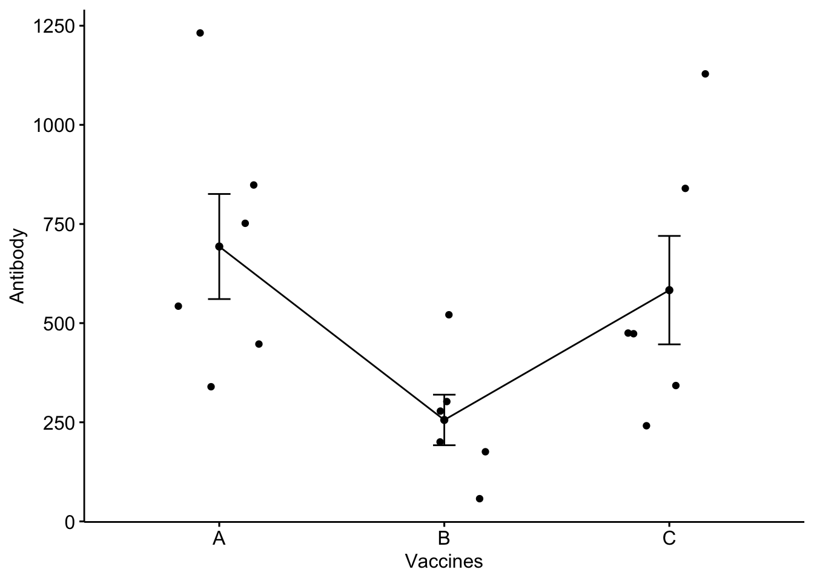
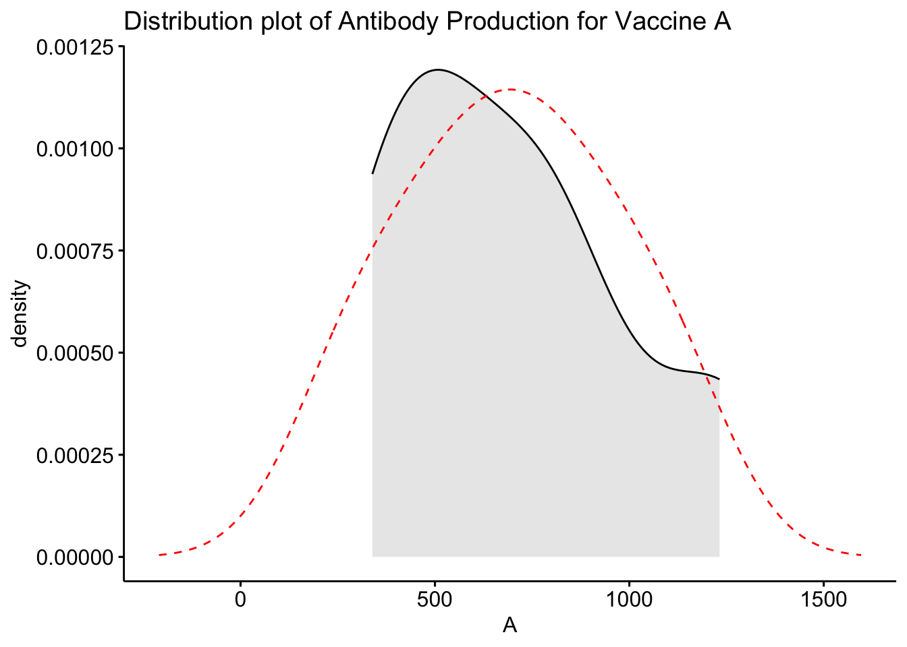
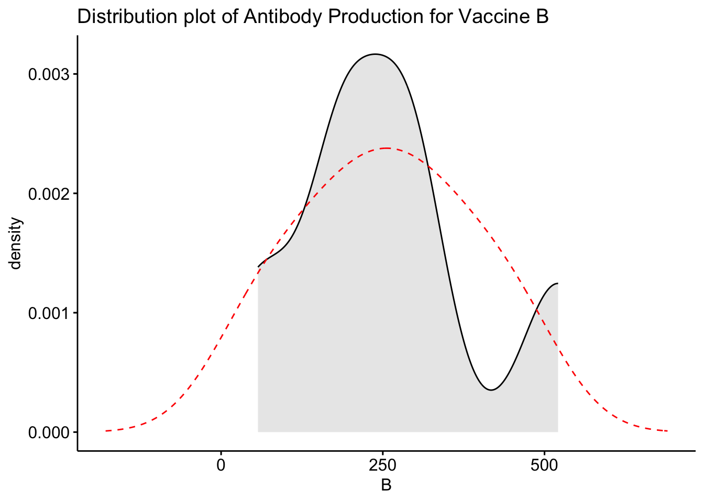
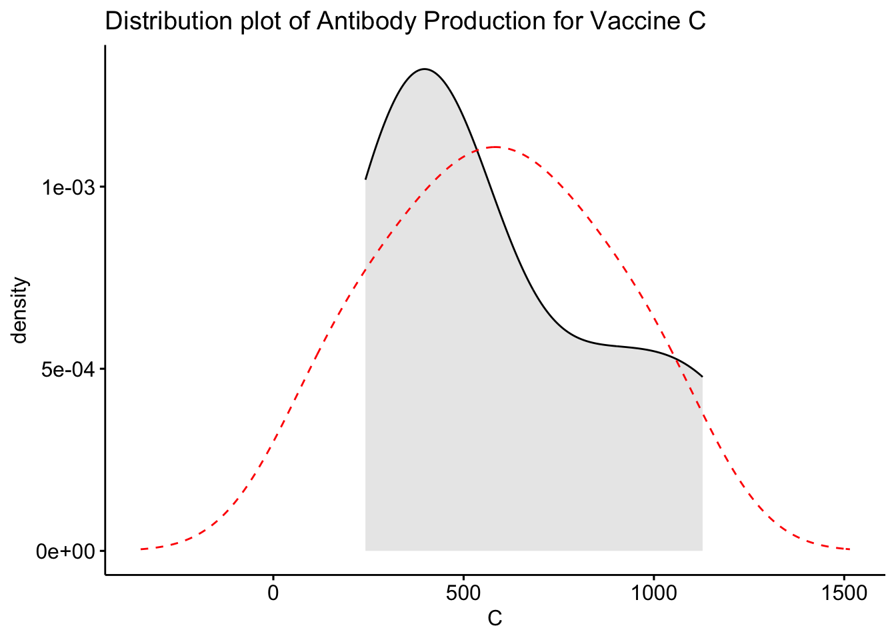
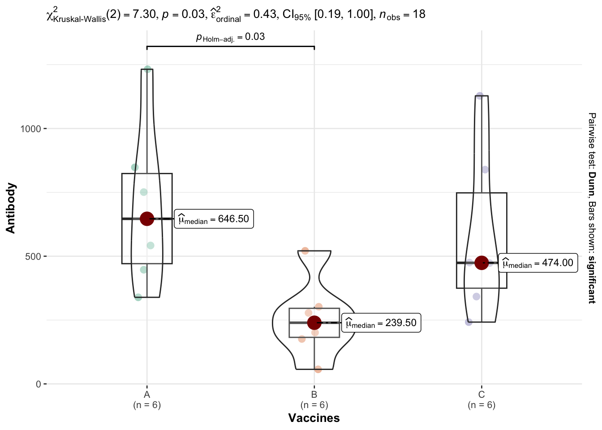

The Kruskal-Wallis test (H-test) is a hypothesis test for multiple independent samples, which is used when the assumptions for a one factor analysis of variance are violated. In other word, it is the non-parametric alternative to the One Way ANOVA. Non-parametric means that the data doesnot follow normal distribution. It is sometimes called the one-way ANOVA on ranks, as the ranks of the data values are used in the test rather than the actual data points.
\(E\) is the expected value of the sum of ranks under the null hypothesis.
\(σ^2_R\) is the square of standard deviation of Rank sum.
Equation for Expected Rank
\[E = \frac{{n+1}}{{2}}\]
Where:
-n represents total number of observations.
Equation for Rank Mean for group i
\[R_i = \frac{{\sum{R}}}{{n_g}}\]
Where:
R_i represents mean rank for \(i^{th}\) group,
\(\sum{R}\) represents sum of ranks in \(i^{th}\) group,
\(n_g\) represents number of observation in \(i^{th}\) group.
Example
Assigning ranks/ E and mean rank calculated/ ready for H calculation
16.1.2 Assumptions
1. Ordinal or Continuous Response Variable – the response variable should be an ordinal or continuous variable.
2. Independence – the observations in each group need to be independent of each other.
3. Sample Size and distribution – each group must have a sample size of 5 or more and the distributions in each group need to have a similar shape but groups does not follow normal distribution.
16.1.3 Hypothesis
The test determines whether two or more independent groups have same central tendency.
H0: population rank sum average are equal for independent group and therefore come from same population.
H1: population rank sum average are significantly different for at-least two or more independent group and therefore come from different population.
16.2 Running Kruskal-Wallis in R
16.2.1 Packages
# install.packages("FSA") # Houses dunnTest for pair wise comparison# install.packages("ggpubr") # For density plot and for creating and customizing 'ggplot2'- based publication ready plots# install.packages("ggstatplot") # Houses gbetweenstats() function that allows building a combination of box and violin plots along with statistical details.# install.packages("tidyverse") # For wrangling and tidying the data# install.packages("MultNonParam")library(MultNonParam)
As an example we will manually create a data, details of which can be found Here.
The data represents antibody production after receiving a vaccine. A hospital administered one of three different vaccines - A, B, or C to 6 individuals per group and measured the antibody presence (\(\mu\)g/mL) in their blood after a chosen time period. The data is as follows: The goal of this exercise will be to determine how the three vaccines performed compared to each other. Essentially, we are looking to determine if the antibody data for each vaccine originates from the same distribution. The sample size is small and normal distribution cannot be assumed. Therefore, we will be conducting the Kruskal-Wallis test.
Null Hypothesis (H0): The vaccines induce equal amounts of antibody production. (all three groups originate from the same distribution and have the same median)
Alternative Hypothesis (H1): At least one vaccine induces different amount of antibodies to be produced.(at least one group originates from a different distribution and has a different median)
# Creating dataframe for antibodies produced (in $\mu$g/mL$) by three different vaccines;A <-c(1232, 751, 339, 848, 447, 542)B <-c(302, 57, 521, 278, 176, 201)C <-c(839, 342, 473, 1128, 242, 475)df <-data.frame(A, B, C)df_tidy <-pivot_longer(data = df,cols =c("A", "B", "C"),names_to ="Vaccines",values_to ="Antibody")df_tidy_sorted <- df_tidy %>%arrange(Vaccines)df_tidy_sorted
# A tibble: 18 × 2
Vaccines Antibody
<chr> <dbl>
1 A 1232
2 A 751
3 A 339
4 A 848
5 A 447
6 A 542
7 B 302
8 B 57
9 B 521
10 B 278
11 B 176
12 B 201
13 C 839
14 C 342
15 C 473
16 C 1128
17 C 242
18 C 475
vaccine_efficacy = df_tidy_sorted
str(vaccine_efficacy)
tibble [18 × 2] (S3: tbl_df/tbl/data.frame)
$ Vaccines: chr [1:18] "A" "A" "A" "A" ...
$ Antibody: num [1:18] 1232 751 339 848 447 ...
Based on the box plot, we see that there is similarity in distribution of A and C while B looks to be different. We can also add the individual data points and connect the boxes to visually see the density distribution and compare with normal distribution for each vaccines.
16.2.4.1 Adding error bars: mean_se
ggline(vaccine_efficacy, x ="Vaccines", y ="Antibody",add =c("mean_se", "jitter"),order =c("A", "B", "C"),ylab ="Antibody", xlab ="Vaccines")

16.2.4.2 Density plot with overlaid normal plot
Next, we want to create a density plot to further visualize the data and compare it to what a normal distribution of these data should look like. This can be done by using the ggdensity function as seen below.
# Plot the distribution of the antibodies for vaccine ggdensity(df$A, fill ="lightgray", title ="Distribution plot of Antibody Production for Vaccine A") +scale_x_continuous() +xlab("A") +stat_overlay_normal_density(color ="red", linetype ="dashed")

# Plot the distribution of the antibodies for vaccine ggdensity(df$B, fill ="lightgray", title ="Distribution plot of Antibody Production for Vaccine B") +scale_x_continuous() +xlab("B") +stat_overlay_normal_density(color ="red", linetype ="dashed")

# Plot the distribution of the antibodies for vaccine ggdensity(df$C, fill ="lightgray", title ="Distribution plot of Antibody Production for Vaccine C") +scale_x_continuous() +xlab("C") +stat_overlay_normal_density(color ="red", linetype ="dashed")

From these density plots, we see that our data is not normally distributed and distribution shape for two vaccines looks similar while one vaccine deviates. As our data is not normally distributed and has small sample size, we will now perform Kruskal-Wallis test to find out whether there are any significant differences between the three vaccines in terms of their efficacy (antibodies production in the body).
16.2.5 Kruskal-Wallis Test
The Kruskal-Wallis test can be done in R using the kruskal.test function as seen below.
result <-kruskal.test(Antibody ~ Vaccines, data = vaccine_efficacy)print(result)
Kruskal-Wallis rank sum test
data: Antibody by Vaccines
Kruskal-Wallis chi-squared = 7.2982, df = 2, p-value = 0.02601
16.2.6 Tabulating the result
table1 <-tbl_summary( vaccine_efficacy,by = Vaccines,) %>%add_p() %>%modify_caption("Antibody Production of Different Vaccines") %>%bold_labels()table1
Antibody Production of Different Vaccines
Characteristic
A, N = 61
B, N = 61
C, N = 61
p-value2
Antibody
647 (471, 824)
240 (182, 296)
474 (375, 748)
0.026
1 Median (IQR)
2 Kruskal-Wallis rank sum test
16.2.7 Interpretation
From the Kruskal-Wallis test, we get that our test statistic is 26.63 with p-value 0.026, which is smaller than our level of significance 0.05. This gives us enough evidence to reject the null hypothesis. Therefore, we conclude that there is a significant difference in the efficacy of at least two of the three vaccines.
16.2.7.1 Post-hoc-Test
The Kruskal-Wallis test helps to determine whether at least two groups differ from each other but it does not specify where in which groups the significance lies. We need to conduct a post-hoc test for this. For this purpose, the Dunn test is the appropriate nonparametric test for the pairwise multiple comparison. We will use Holm adjustment method for multiple comparison. You can read about various adjustment methods for multiple comparison herechen2017?
pair_wise_compare <-dunnTest(Antibody~Vaccines, data = vaccine_efficacy,method ="holm")pair_wise_compare
Dunn (1964) Kruskal-Wallis multiple comparison
p-values adjusted with the Holm method.
Comparison Z P.unadj P.adj
1 A - B 2.5955427 0.009444166 0.0283325
2 A - C 0.6488857 0.516412268 0.5164123
3 B - C -1.9466571 0.051575864 0.1031517
When looking at the adjusted p-values in the last column for each pairwise comparison, we can see that only the A-B vaccine comparison has a p-value that is less than our level of significance of 0.05. Therefore, we conclude that there is significant difference in vaccine A-B while there is no significant difference between vaccines A-C, and B-C.
16.2.8 Alternative method
A very good alternative for performing a Kruskal-Wallis and the post-hoc tests in R is with the ggbetweenstats() function from the {ggstatsplot} package: It provides a combination of box and violin plots along with jittered data points for between-subjects designs with statistical details included in the plot as a subtitle.
ggbetweenstats(data = vaccine_efficacy,x = Vaccines,y = Antibody,type ="nonparametric", # ANOVA or Kruskal-Wallisplot.type ="box",pairwise.comparisons =TRUE,pairwise.display ="significant",centrality.type ="nonparametric", # It displays median for non parametric data by default.bf.message =FALSE# Logical that decides whether to display Bayes Factor in favor of the null hypothesis. This argument is relevant only for parametric test)

This method has the advantage that all necessary statistical results are displayed directly on the plot. It also provides a more efficient and concise code.
The results of the Kruskal-Wallis test are shown in the subtitle above the plot (the p-value is after p =). Moreover, the results of the post-hoc test are displayed between each group via accolades, and the boxplots allow to visualize the distribution for each species.
16.3 Conclusion
In conclusion, the Kruskal-Wallace test is a non-parametric hypothesis test that can be used to determine if there are significant differences between two or more groups using the ranks of the data values. The first step involves visualizing the data to confirm it violates the rules of normality. Next, you conduct the Kruskal-Wallis test to determine if there are significant differences. Finally, you run a post-hoc test to calculate pairwise comparisons and determine which specific groups are significantly different.